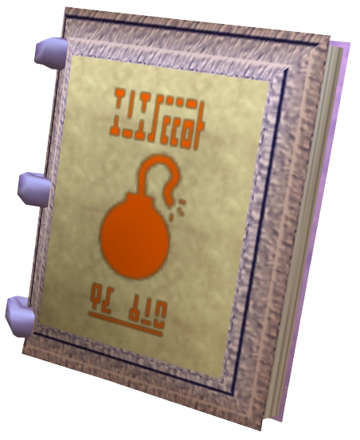
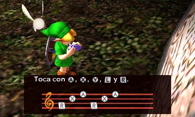
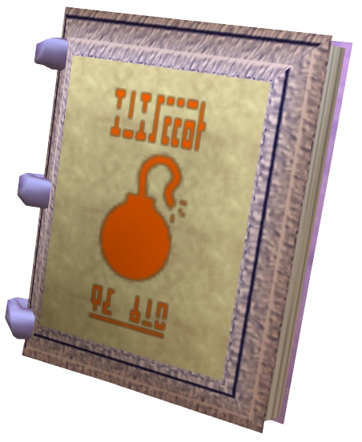
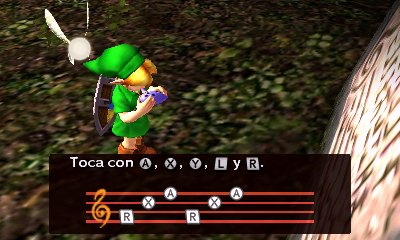

GRÁFICO
Assim como no remake The Legend of Zelda: Ocarina of Time 3D, os gráficos são atualizados utilizando modelos de personagens mais detalhados e refazendo o visual do título do Nintendo 64. Essa mudança não é tão drástica, e boa parte do cenário retém a geometria original um pouco quadrada, como vocês conseguem ver na imagem abaixo passando o mouse por cima:
Apesar disso, o visual realmente se destaca naquilo que mais importa: o personagem Link, seus coadjuvantes mais diretos, o vilão Skull Kid e obviamente a gigantesca Lua. Com um rosto macabro, a Lua ameaça cair sobre sua cabeça e destruir o mundo de Termina. A iluminação, básica na época dos 64 bits, também receberá grandes melhorias.
A IGN (grande órgão sobre games no mundo) fez um vídeo comparando a abertura, batalhas comum e com chefes e vários elementos da gameplay de The Legend of Zelda: Majora’s Mask com a original do Nintendo 64.
REALIZANDO MISSÕES
Você vai receber itens, entre eles: o Bomber’s Notebook é um caderno de um grupo de crianças usado para anotar detalhes sobre o que acontece em Termina. Ele manterá um registro de rumores importantes, acontecimentos em certos horários e a rotina das pessoas para que você consiga realizar missões.
No Majora’s Mask original, o caderno tinha um uso um pouco limitado e não ajudava muito. No remake, será possível até mesmo colocar alarmes que avisam sobre certos acontecimentos. Com isso, você não perde mais a hora dos seus compromissos.

VIAGEM NO TEMPO
Enquanto em Ocarina of Time o jogador podia viajar no tempo entre Link adulto e criança, em Majora’s Mask a Song of Time, a aventura é reiniciada, sempre voltando ao início dos 3 dias. Havia músicas para deixar o tempo mais rápido ou mais lento. Ainda assim, era um jogo onde você passava longos períodos apenas esperando.

Para o remake, a Nintendo adicionou uma viagem no tempo mais específica. Com ela, você poderá viajar para uma hora exata dentro de cada um dos dias. Assim, não é mais necessário esperar para que os eventos aconteçam nem ficar avançando e rebobinando o tempo de uma maneira tão antiquada como uma fita de videocassete.
GRÁFICO
| Assim como no remake The Legend of Zelda: Ocarina of Time 3D, os gráficos são atualizados utilizando modelos de personagens mais detalhados e refazendo o visual do título do Nintendo 64. Essa mudança não é tão drástica, e boa parte do cenário retém a geometria original um pouco quadrada, como vocês conseguem ver na imagem abaixo passando o mouse por cima: |
| Apesar disso, o visual realmente se destaca naquilo que mais importa: o personagem Link, seus coadjuvantes mais diretos, o vilão Skull Kid e obviamente a gigantesca Lua. Com um rosto macabro, a Lua ameaça cair sobre sua cabeça e destruir o mundo de Termina. A iluminação, básica na época dos 64 bits, também receberá grandes melhorias. |
| A IGN (grande órgão sobre games no mundo) fez um vídeo comparando a abertura, batalhas comum e com chefes e vários elementos da gameplay de The Legend of Zelda: Majora’s Mask com a original do Nintendo 64. |
REALIZANDO MISSÕES
| Você vai receber itens, entre eles: o Bomber’s Notebook é um caderno de um grupo de crianças usado para anotar detalhes sobre o que acontece em Termina. Ele manterá um registro de rumores importantes, acontecimentos em certos horários e a rotina das pessoas para que você consiga realizar missões. |
| No Majora’s Mask original, o caderno tinha um uso um pouco limitado e não ajudava muito. No remake, será possível até mesmo colocar alarmes que avisam sobre certos acontecimentos. Com isso, você não perde mais a hora dos seus compromissos. |

VIAGEM NO TEMPO
| Enquanto em Ocarina of Time o jogador podia viajar no tempo entre Link adulto e criança, em Majora’s Mask a Song of Time, a aventura é reiniciada, sempre voltando ao início dos 3 dias. Havia músicas para deixar o tempo mais rápido ou mais lento. Ainda assim, era um jogo onde você passava longos períodos apenas esperando. |

| Para o remake, a Nintendo adicionou uma viagem no tempo mais específica. Com ela, você poderá viajar para uma hora exata dentro de cada um dos dias. Assim, não é mais necessário esperar para que os eventos aconteçam nem ficar avançando e rebobinando o tempo de uma maneira tão antiquada como uma fita de videocassete. |